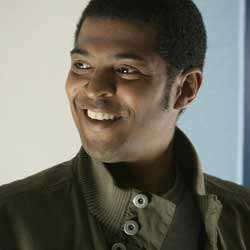

|
| Home The Doctors The Companions The Villians Show History |
Mickey SmithMickey Smith is a fictional character portrayed by Noel Clarke in the British science fiction television series Doctor Who. The character is introduced as the ordinary, working class boyfriend of Rose Tyler (Billie Piper), a London shopgirl who becomes a travelling companion to the Ninth and Tenth incarnations of an alienTime Lord known as the Doctor. Mickey first appears in the first episode of the 2005 revival, "Rose". Initially someone who struggles in the face of danger, Mickey nevertheless acts as an Earth-based ally to the Doctor and Rose. In the second series he joins the pair as a second companion of the Doctor's, though leaves during the 2006 series to pursue his own adventures. He returns to aid the Doctor and Rose in the series finale later that year, and then again for the 2008 finale "Journey's End," as well as fleetingly in 2010 in the Tenth Doctor send-off The End of Time. Executive producer Russell T Davies created the character alongside Rose's mother Jackie (Camille Coduri) in order to provide a home context for Rose. The character's dubious personality traits were made evident; both Davies and Clarke postulated that the character "deserved to lose his girlfriend". Though Clarke felt his character was initially "a clown" he enjoyed having the chance to mature Mickey into a more heroic character in his later appearances. Television commentators generally reacted positively to this character growth. In 2007 the entertainment and media news website Digital Spy highlighted him as a "Cult Spy Icon".
|
|
Madeleine Schwartz Ann Marie Skjold |
Content derived from Dr. Who Wikipedia.
|